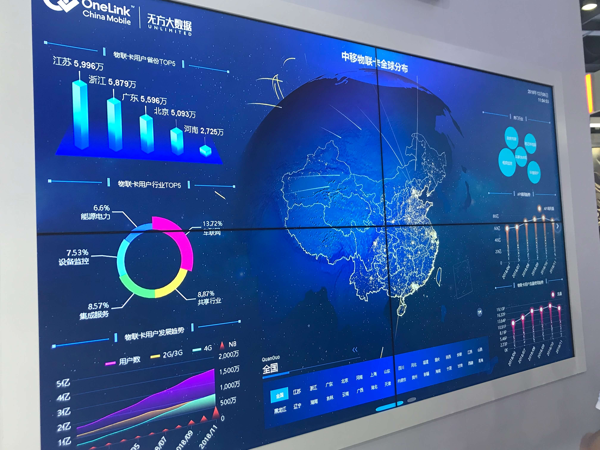

大屏项目思考
经历了两个星期的高强度工作💥，有一些想法。
在过去的半个月中 ，我先后经手了两个项目“和动力实时数据统计”和“ESOP大屏展示”。
我先从几个方面说一下它们：需求确定，交互，视觉，客户反馈。
概要
和动力的时间特别紧凑(3天)，客户要求也比较多，再加上水平比较菜，所以做起来心累。
ESOP大屏有了和动力的经验，稍好一些，同时客户的要求也不是特别的高，所以相对简单一些。
需求确定
和动力的需求是通过客户微信群进行沟通，客户的要求也比较多，导致修改次数较多。
ESOP大屏的需求是我去杭州与客户进行交流，回来之后和李寅、春强一起讨论，然后输出了交互稿，整个流程较为清晰。
交互
和以往的系统界面设计不同，大屏的交互相对来说没有那么复杂，但是依然有几点需要注意：
- 尽量少的滚动，或者其他操作
- 整个屏幕一定要有一个视觉主体，这个主体必须要强调，与此同时，其他部分必须有一定程度的弱化。
- 整个画面可以变化的元素不宜过多，不然会让人应接不暇。
- 不宜出现太多的表格数据，展现形式应该尽可能多样化，例如柱状/环状/折线/雷达等。整体来说，展现的数据形式越多样化，整个画面就会越丰富。在展会现场的其他照片也印证了这一点。

- 比较重要的几项数据，可以放在最顶端。这一点和dashboard也比较相似。
视觉
在视觉制作前，必须要将业务、交互逻辑了解透彻才可以。Cause this is the very first step.
反复思考，客户到底要什么？尤其要问，这个大屏是给谁看的？站在观众的视角想他看见这些内容的反馈是什么？要比提需求的客户更懂需求，才能做贴近人心的设计。
在视觉制作中，我有了一些自己的想法：
- 在制作大的背景时（太空或者其他抽象图案）需要有远有近的对比，制造景深的诀窍就在于颜色的深浅、虚实、大小————例如，颜色鲜艳一些、亮一些、实一些就会给人一种在画面前方的感觉；相反，颜色暗淡、亮度较低、比较模糊就会给人一种远处的感觉。所以综上，就是需要各种手法达到一个制造场景（大景深）的目的。例如在下图中我们就能够看出，通过颜色的明暗做出了一种空间感。
- 在大屏制作中不宜使用大量的纯白，因为在实际现场中会看亮到一团看不清，解决方法是在白色基础上加一些主色调（例如蓝色）。
- 在主色调（蓝色）之外，可以适当的加一些其他色相的颜色，利用分裂互补色、邻近色的方法，可以在色轮上找到一些适合的颜色；需要注意的是，我们并不是通过规则直接寻找颜色，而是要通过眼睛再进行细微的调节。颜色在5种之内即可。
- 不重要的部分可以尽可能的削弱（利用颜色、大小），重要的地方可以着重突出。
- 在刚开始做页面的时候，可以先将页面内容全部铺开来，再进行调整。（ps：就像速写一样，先将比例关系确定，再进行其他的微调）
- 展现的形式一定不要太拘泥，可以放开些，例如展现排名，就可以使用多种方式。
- 制作的时候，需要时不时从整体上来看是否和谐。需要注意一下整体的比例感，呼吸感等。
客户反馈
和动力的客户经过了数次修改之后，终于在展会中顺利展出了，反馈的还不错。
ESOP大屏在今年即将顺利出第一期，客户也表示基本满意。
思考🤔
以后在做大屏的时候，在时间充裕的前提下，可以和前端讨论一下，例如在地图展现时，可以用不同的方式，例如下图展现的是用户量，非常形象。

Last but not lesat, I am glad and honour to participate in these two projects. Echo and Vivi help and teach me a lot during these time when I got trouble. Thank you guys. I will do better next time after these two projects.